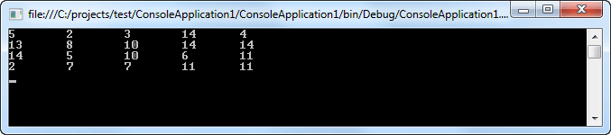
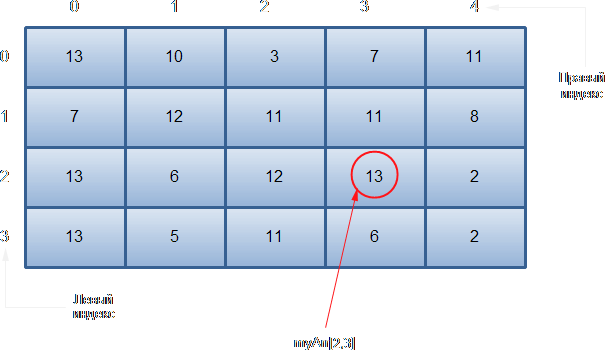

| Многомерные массивы C#. | ||
| Назад | ||
|
Многомерным называется такой массив, который отличается двумя или более измерениями, причем доступ к каждому элементу такого массива осуществляется с помощью определенной комбинации двух или более индексов. Многомерный массив индексируется двумя и более целыми числами. Двумерные массивыПростейшей формой многомерного массива является двумерный массив. Местоположение любого элемента в двумерном массиве обозначается двумя индексами. Такой массив можно представить в виде таблицы, на строки которой указывает один индекс, а на столбцы — другой. Пример объявления и инициализации двумерного массива показан ниже:  Обратите особое внимание на способ объявления двумерного массива. Схематическое представление массива myArr показано ниже:  Массивы трех и более измеренийВ C# допускаются массивы трех и более измерений. Ниже приведена общая форма объявления многомерного массива: тип[,...,] имя_массива = new тип[размер1, размер2, ... размеры]; Ниже приведен пример программы, использующей трехмерный массив:
Инициализация многомерных массивовтип[,] имя_массива = {
{val, val, val, ..., val},
{ val, val, val, ..., val},
{val, val, val, ..., val}
};
Для инициализации многомерного массива достаточно заключить в фигурные скобки список инициализаторов каждого его размера: где val обозначает инициализирующее значение, а каждый внутренний блок — отдельный ряд. Первое значение в каждом ряду сохраняется на первой позиции в массиве, второе значение — на второй позиции и т.д. Обратите внимание на то, что блоки инициализаторов разделяются запятыми, а после завершающей эти блоки закрывающей фигурной скобки ставится точка с запятой. Ниже в качестве примера приведена общая форма инициализации двумерного массива:
|
||
| Конспект подготовлен Бакулиным А. М. 2022 год. | ||